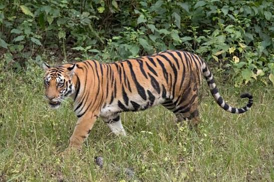

Tigers (panthera tigris) are the largest cats in the world, weighing as much as 300kg and measuring as long as 11 feet. Classified as a threatened species, their range is just 5% of its historical size.

| Country | Estimated number of tigers |
|---|---|
| India | 3167 |
| Russia | 750 |
| Indonesia | 393 |
| Nepal | 355 |
| Thailand | 189 |